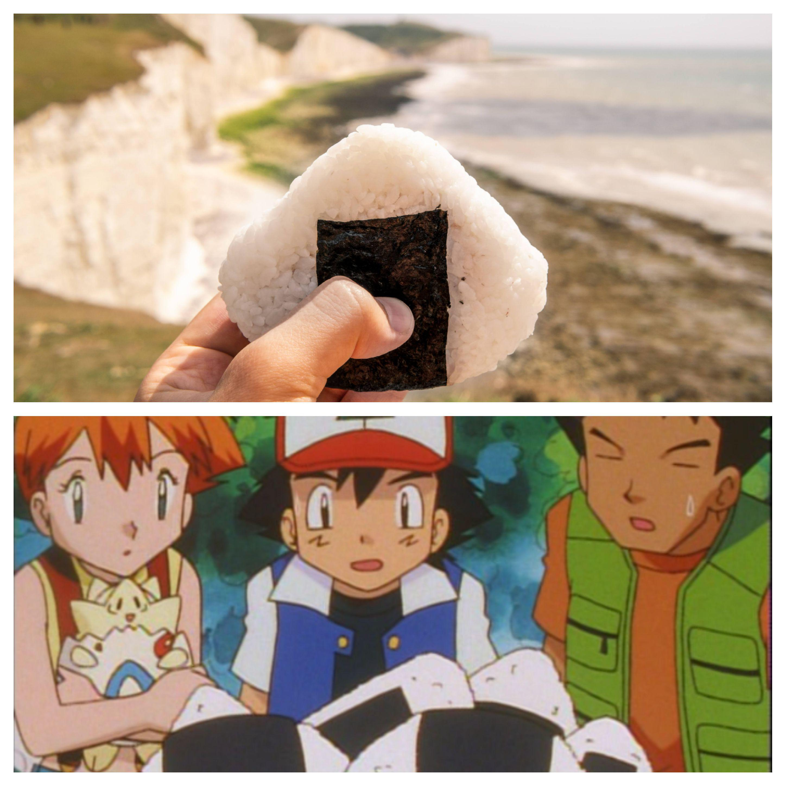

Brock's Onigiri

A Snack Fit For a Champion
"When you have lemons, you make lemonade; and when you have rice, you make rice balls."
Ingredients
- 2 cups of Rice
- 2.5 cups of Water
- Filling of your choice: pickled plums, tuna, teriyaki chicken and smoked salmon are all popular choices
- Nori
- Optional: Sesame Seeds and Furikake
Steps
- Rinse and cook the rice with the water and the rice cooker.
- Wet your hands, and shape the rice into palm-sized balls.
- Make an opening in the rice and place any fillings you desire. Reshape the rice into a ball or triangle when finished
- Optional: Roll the onigiri in sesame seeds and furkake.
- Wrap the onigiri with nori